—named cheaply after a seemingly good movie that I haven't gotten to see yet—you're given a pseudo-random phrase associated with a color in some way; your goal is to use the color controls provided to match the secret color as close as you possibly can. Hints are provided after each of your 10 guesses, in the form of percentage in general-closeness and high-or-low position of color values (RGB/HSL). Can you find the color?
The current aesthetic of this site is very simple, with a monochrome color scheme. This is the general look that I will be sticking with, however if time allows I would like to add some interactivity there, whether that be letting the user pick the color, or even set the site's background as a randomly-picked pattern based on a given color, which I believe the ColourLovers API allows.
Throughout the game, players will have full control of an in-depth color picker, including a hue wheel, 6 color sliders (for RGB/HSL values), 8 randomly-generated color presets, and a brightness slider. while the UI is quite straight-forward in itself, I may add a brief introduction widget that appears when it's the user's first time playing.
"PATTERN SPACE" Is the leftover space outside of the gameboard (which I may set at a static aspect ratio) where I hope to be able to place randomly-selected patterns based on scheme color.
This project will be a continuation of my Project 2, adding further functionality and cleaning things up throughout to (hopefully) hit all of the requirements asked of most others who are starting fresh. I messed with PixiJS for a while, and didn't really feel much excitement in making my own stuff on it, so with how happy I was with how my Project 2 came out, I figured there really wasn't any better option. Adding onto something that I've already made, though, I'm aware that a lot is going to have to change in order for my work to seem adequate compared to others', and I feel good in that because I have a lot of ideas I want to put into this. When it comes to code used for this project from others (of which all is directly credited), I have two generic libraries (jQuery and colorJS) and two more specific libraries (PitPik colorpicker and the SVG color function) that are already being used. I don't know yet what additional libraries I might want to add to this project from here on; those will likely come as soon as I realize I have a major functionality that's beyond my depth in coding, at least for a project of this particular depth. I'll speak with professors about that as the time comes.
My name is Luke Mavroudakis, and I'm a 2nd-year Game Design & Development student (with a recently-enrolled minor in Modern Language - Japanese) at Rochester Institute of Technology. Since coming to school I've *developed* a love for development, mainly in things I just think are cool like my concept for this project. I hope for that love (and some successful projects that come from it) to take me far in the future, but as I work on myself in the meantime I hope to integrate my older love for art/music into the mix in larger ways than I have, maybe even somehow a bit into this itself.